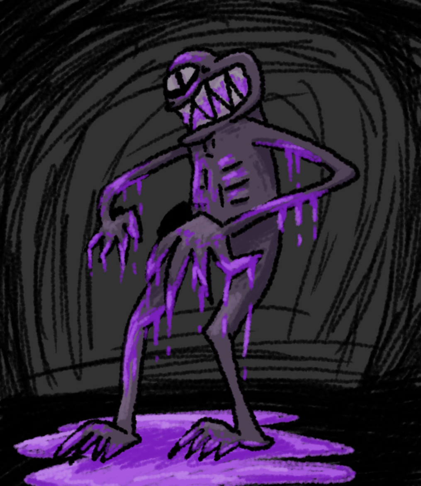

Void Creature
One of my more traditional peices. Done for an art jam between a couple friends. The theme was "void." I forgot to draw the thigh on the left. :/
One of the only peices made with Affinity, I'd use it if I weren't on Linux.

One of my more traditional peices. Done for an art jam between a couple friends. The theme was "void." I forgot to draw the thigh on the left. :/
One of the only peices made with Affinity, I'd use it if I weren't on Linux.